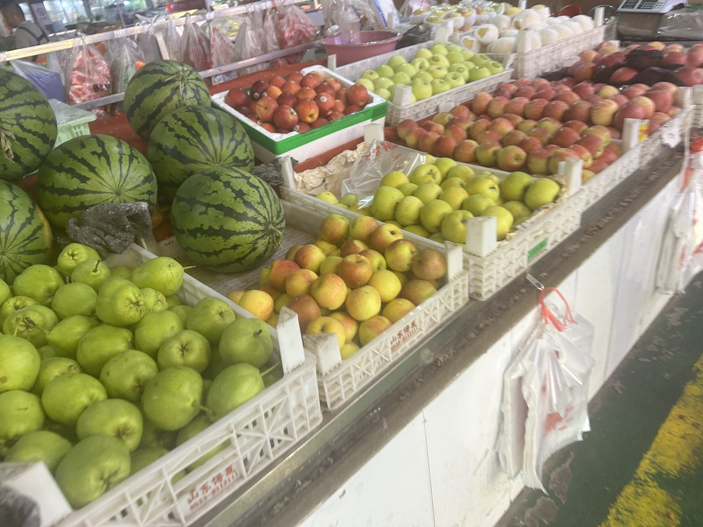

腋窝
@mofuwo8964
家附近的菜市场。不过我很喜欢这个地方！有便宜好吃的水果和说着我熟悉的方言的人，买水果然后散步回家买一个炒酸奶，好幸福呀，虽然脏乱差还一直有人吆喝，但我觉得这样温暖的地方让我好安心。
我总是说讨厌我出身的小县城，但其实我好像并不讨厌，反而挺喜欢这里的。这里的充气城堡构成了我的童年，这里的路边摊承载了我小小的喜悦，这里绿化很差的公园连带着我和初恋不敢相互靠近的长椅，这里郁郁葱葱的树总让我想起来爷爷骑着自行车回家，我用他的诺基亚玩贪吃蛇的日子。我想我很爱这个地方，也许不是这个地方的优秀而是我产生的羁绊和回忆让我产生了无根据的怀恋吧，我猜的，药效上来了好困
